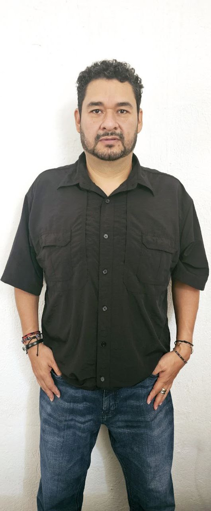

Biografía

Doctor en Ciencias Ambientales por la Universidad Autónoma de Nayarit (México) con una sólida especialización en Sistemas de Información Geográfica (SIG) y Teledetección por la Universidad de Alcalá de Henares (España). Esta formación dual le ha permitido consolidar una trayectoria académica y profesional centrada en el análisis de las transformaciones del territorio, utilizando un enfoque interdisciplinario que integra las ciencias ambientales, la ingeniería y las herramientas geoespaciales.
Como especialista en Análisis de Cambios de Cobertura y Uso de Suelo (CCUS) a través de percepción remota, Simulación del Crecimiento Urbano (SCU), Modelación de Escenarios Futuros (MEF) y estudios de vulnerabilidad de humedales costeros ante erosión e inundación por efectos del cambio climático, ha desarrollado una amplia experiencia en el tratamiento de imágenes de satélite, aplicando algoritmos de teledetección y generando cartografía temática para la cuantificación y monitoreo de los recursos naturales. Sus investigaciones, como las realizadas en el área metropolitana de Tepic-Xalisco y la cuenca del río Mololoa y Tabasco, ejemplifican su capacidad para modelar las dinámicas territoriales y evaluar sus impactos ambientales.
Sus intereses de investigación se orientan hacia la resolución de problemáticas socioambientales derivadas de las actividades antropogénicas y por efectos del cambio climático. A través de proyectos como el diagnóstico de humedales urbanos en Tabasco y vulnerabilidad costera en el sureste de México —durante su estancia posdoctoral en el Departamento de Observación y Estudio de la Tierra, la Atmósfera y el Océano de ECOSUR—, genera herramientas concretas para la evaluación y toma de decisiones en la planeación y gestión del territorio. Su trabajo trasciende el ámbito académico, con una clara vocación de impacto social y vinculación con actores locales y tomadores de decisiones.
En el ámbito profesional, cuenta con más de 10 años de experiencia en el sector privado, donde ha participado en la elaboración de Manifestaciones de Impacto Ambiental (MIA) y Estudios de Riesgo Ambiental (ERA) para proyectos habitacionales, industriales y turísticos, tanto a nivel estatal como federal. Esta experiencia práctica en consultoría le ha permitido integrar el conocimiento científico con las necesidades reales de la gestión ambiental.
Su trayectoria ha sido reconocida con distinciones como la Medalla Nayarit a la Investigación Científica, otorgada por el COCYTEN, y su ingreso al Sistema Nacional de Investigadores (SNI) Nivel 1; también ha sido reconocido como miembro del Sistema Estatal de Investigadores de Tabasco (SEI-Tabasco). Actualmente, colabora como profesor en la Maestría en Ciencias en Recursos Naturales y Desarrollo Rural y en el Doctorado en Ciencias en Ecología y Desarrollo Sustentable de El Colegio de la Frontera Sur (ECOSUR), Unidad Villahermosa, manteniendo además una estrecha colaboración con el Cuerpo Académico Consolidado de Recursos Naturales de la Universidad Autónoma de Nayarit. A través de estas colaboraciones, continúa formando nuevas generaciones de investigadores y contribuyendo a la generación de conocimiento aplicado para la sostenibilidad territorial.